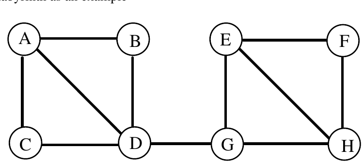

The Nineteenth Annual ACM International Collegiate Programming Contest Finals · Problem F
Those of you with a classical education may remember the legend of Theseus and the Minotaur. This is an unlikely tale involving a bull-headed monster, lovelorn damsels, balls of silk and an underground maze full of twisty little passages all alike. In line with the educational nature of this contest, we will now reveal the true story.
The maze was a series of caverns connected by passages. Theseus managed to smuggle into the labyrinth with him a supply of candles and a small tube of phosphorescent paint with which he could mark his way, or, more specifically, the exits he used. He knew that he would be lowered into a passage between two caverns, and that if he could find and kill the Minotaur he would be set free. His intended strategy was to move cautiously along a passage until he came to a cavern and then turn right (he was left-handed and wished to keep his sword away from the wall) and feel his way around the edge of the cavern until he came to an exit. If this was unmarked, he would mark it and enter it; if it was marked he would ignore it and continue around the cavern. If he heard the Minotaur in a cavern with him, he would light a candle and kill the Minotaur, since the Minotaur would be blinded by the light. If, however, he met the Minotaur in a passage he would be in trouble, since the size of the passage would restrict his movements and he would be unable to either light a candle or fight adequately. When he entered a cavern that had been previously entered by the Minotaur he would light a candle and leave it there and then turn right (as usual) but take the Minotaur’s exit.
In the meantime, the Minotaur was also searching for Theseus. He was bigger and slower-moving but he knew the caverns well and hence, unlikely as it may seem, every time he emerged from a passage into a cavern, so did Theseus, albeit usually in a different one. The Minotaur turned left when he entered a cavern and traveled clockwise around it until he came to an unmarked (by him) exit, at which point he would mark it and take it. If he sensed that the cavern he was about to enter had a candle burning in it, he would turn and flee back up the passage he had just used, arriving back at the previous cavern to complete his ‘turn.’
Consider the following labyrinth as an example

Assume that Theseus starts off between A and C going toward C, and that the Minotaur starts off between F and H going toward H. After entering C, Theseus will move to D, whereas the Minotaur, after entering H will move to G.
Theseus will then move towards G while the Minotaur will head for D and Theseus will be killed in the corridor between D and G. If, however, Theseus starts off as before and the Minotaur starts off between D and G then, while Theseus moves from C to D to G, the Minotaur moves from G to E to F. When Theseus enters G he detects that the Minotaur has been there before him and heads for E, and not for H, reaching it as the Minotaur reaches H. The Minotaur is thwarted in his attempt to get to G and turns back, arriving in H just as Theseus, still ‘following’ the Minotaur arrives in F. The Minotaur tries E and is again thwarted and arrives back at H just as Theseus arrives in hot pursuit. Thus the Minotaur is slain in H.
Write a program that will simulate Theseus’ pursuit of the Minotaur.
Input will consist of a series of labyrinths. Each labyrinth will contain a series of cavern descriptors, one per line. Each line will contain a cavern identifier (a single upper case character) followed by a colon (:) and a list of caverns reachable from it (in counterclockwise order). No cavern will be connected to itself. The cavern descriptors will not be ordered in any way. The description of a labyrinth will be terminated by a line starting with a @ character, followed by two pairs of cavern identifiers. The first pair indicates the passage in which Theseus starts, and the second in which the Minotaur starts. The travel in a starting passage is toward the cavern whose identifier is the second character in the pair. The file will be terminated by a line consisting of a single #.
A final encounter is possible for each input data set.
Output will consist of one line for each labyrinth. Each line will specify who gets killed and where. Note that if the final encounter takes place in a passage it should be specified from Theseus’ point of view. Follow the format shown in the example below exactly, which describes the situations referred to above.
A:BCD D:BACG F:HE G:HED B:AD E:FGH H:FEG C:AD @ACFH A:BCD D:BACG F:HE G:HED B:AD E:FGH H:FEG C:AD @ACDG #
Theseus is killed between D and G The Minotaur is slain in H